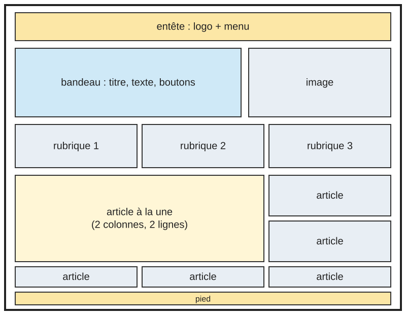
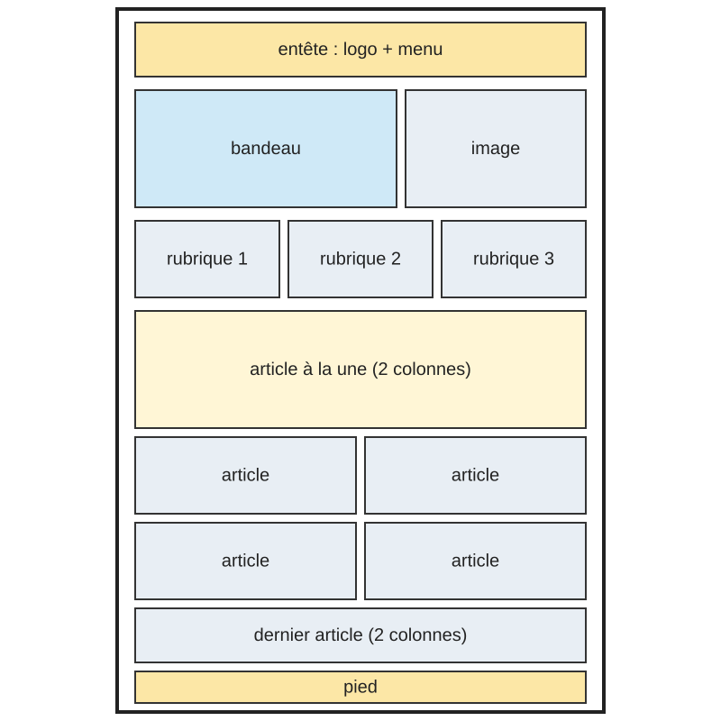
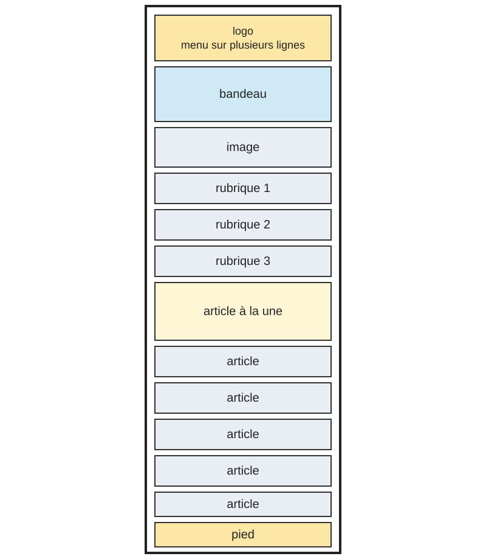
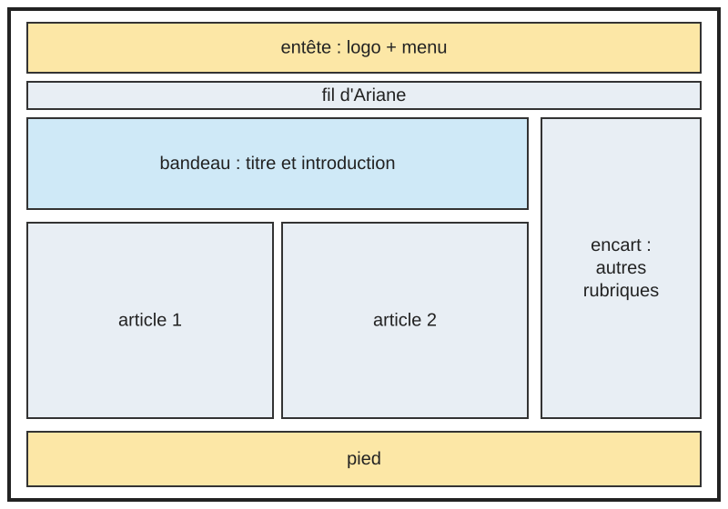
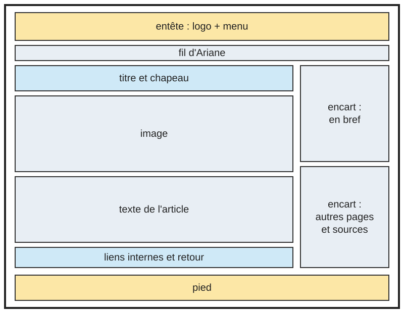
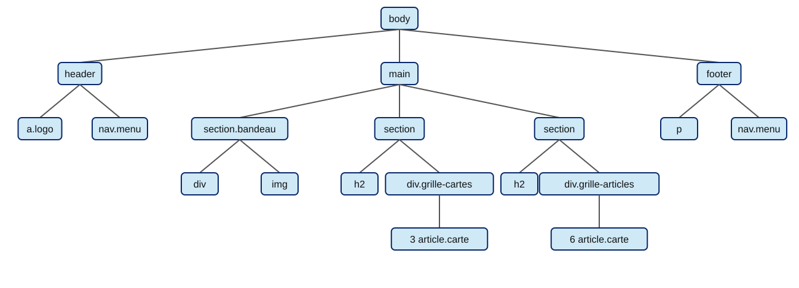
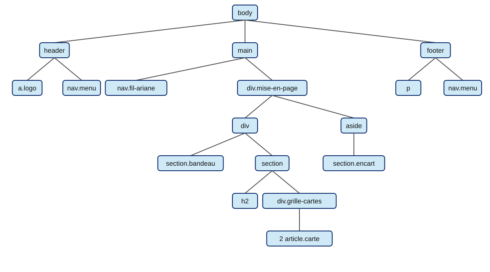
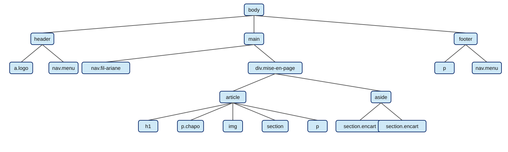

À propos de ce site
Cette page sert de rapport au projet du module R1-02 : Développement d'interfaces Web.
Le thème retenu
Le thème est Jul, rappeur marseillais. Il convient facilement à la structure demandée, car son histoire se découpe en plusieurs rubriques : son parcours, sa discographie, le phénomène qui l'entoure...
Le site en ligne
Le site est accessible sur le serveur de l'IUT : Ici !
Les maquettes

Accueil sur ordinateur
Le bandeau présente le sujet à côté d'une image. Les trois rubriques viennent ensuite sur une ligne. L'article à la une occupe deux colonnes et deux lignes pour attirer l'oeil en premier.

Accueil sur tablette
Le bandeau et les rubriques gardent leur disposition. Les articles passent sur deux colonnes. L'article à la une et le dernier article prennent toute la largeur, ce qui évite une case vide.

Accueil sur téléphone
Tout passe sur une seule colonne.

Page de rubrique
Le chemin d'accès (fil d'Ariane) indique où l'on se trouve. Le bandeau introduit la rubrique, puis ses articles sont présentés. L'encart donne accès aux autres rubriques. Sur tablette et téléphone, il passe sous le contenu.

Page d'article
Le texte occupe la plus grande colonne pour rester lisible. Les encarts résument l'essentiel et proposent la suite. Sur tablette et téléphone, ils passent sous l'article.
Les arbres HTML
Ces arbres montrent l'imbrication des principaux éléments de chaque type de page.
Page d'accueil

Page de rubrique

Page d'article

Justification des conteneurs flex et grid
La règle suivie est simple : flex quand les éléments s'alignent sur un seul axe, grid quand la disposition se pense en lignes et en colonnes.
body (flex)
- Pourquoi : une colonne flexible permet à main de prendre l'espace restant avec flex-grow. Le pied de page reste ainsi en bas, même sur une page courte.
- Enfants directs : header, main et footer.
- Responsive : aucun changement, la colonne convient à tous les écrans.
.entete et .pied (flex)
- Pourquoi : ces barres alignent deux blocs sur une ligne, repoussés aux extrémités avec justify-content: space-between.
- Enfants directs : le logo et le menu pour l'entête, le texte et le menu pour le pied.
- Responsive : sur téléphone, flex-direction: column les empile et centre le contenu.
.menu (flex)
- Pourquoi : les liens forment une seule rangée, et flex-wrap gère le manque de place sans media query.
- Enfants directs : les liens a.
- Responsive : les liens passent à la ligne d'eux-mêmes et sont centrés sur téléphone.
.carte (flex)
- Pourquoi : une colonne permet de pousser le bouton en bas avec margin-top: auto. Les boutons restent alignés, quelle que soit la longueur du texte.
- Enfants directs : l'image, le titre, le résumé, la liste éventuelle et le bouton.
- Responsive : aucun changement, la carte s'adapte à la largeur de sa colonne.
.deux-colonnes (grid)
- Pourquoi : le bandeau d'accueil et les maquettes de cette page ont besoin de deux colonnes de largeurs proportionnelles (3fr 2fr). La même classe sert aux deux pour éviter la redondance.
- Enfants directs : un bloc de texte et une image.
- Responsive : sur téléphone, une seule colonne (1fr).
.grille-cartes (grid)
- Pourquoi : repeat(auto-fit, minmax(200px, 1fr)) s'ajuste au nombre de cartes : trois rubriques sur l'accueil, deux articles dans une rubrique.
- Enfants directs : les article.carte.
- Responsive : le nombre de colonnes s'adapte seul à la largeur, sans media query.
.grille-articles (grid)
- Pourquoi : une grille à deux dimensions est nécessaire pour que l'article à la une (#a-la-une) occupe deux colonnes et deux lignes. Avec order: -1, il suffit de déplacer cet id pour changer d'article mis en valeur.
- Enfants directs : les six article.carte.
- Responsive : trois colonnes sur ordinateur, deux sur tablette, une sur téléphone.
.mise-en-page (grid)
- Pourquoi : les pages de rubrique et d'article juxtaposent un contenu principal et un encart, dans un rapport 3fr 1fr.
- Enfants directs : le contenu principal et le aside.
- Responsive : à partir de la taille tablette, une seule colonne : l'encart passe sous le contenu.
Les images et l'utilisation d'outils d'IA
Différentes photos de Jul, de ses concerts ou pour des illustrations ont été trouvées sur google.
Elles ont été redimmensionné grace à l'outil d'IA Claude.
Conclusion et difficultés rencontrées
Le site respecte la structure demandée. Les pages utilisent une seule feuille de styles, ce qui permettra de changer facilement de modifier le visuel.
Plusieurs points ont demandé une attention particulière :
- La grille des articles : un article sur deux colonnes laissait une case vide sur tablette. Le dernier article prend donc lui aussi toute la largeur à cette taille.
- La fiabilité des chiffres : les ventes et les affluences varient selon les sources. Les chiffres viennent de Wikipédia, et les certifications officielles se vérifient auprès du SNEP.